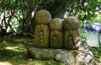
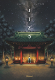

Moral du voyage
Le voyage nous fait découvrir le monde, de nouvelles cultures et
nous donnes une bonne ouverture d’esprit. Lors d’un voyage on peut
apprendre de soi et découvrir que l’on n'est pas fait pour la vie
que l’on a actuellement, par exemple on peut visiter un pays et
se rendre compte que l’on veut tout quitter pour vivre là-bas car cela nous correspond mieux
Présentation du lieu et des Jizos
Le lieu dont j’aimerais vous parler est un temple de bambou avec des statuettes de jizo,
ce lieu est situé dans la ville de Kyoto au Japon. J’ai choisi ce lieu tout d’abord car
il est au Japon et c’est un pays que j’aimerais visiter plus tard avec ma famille ou
des amis mais aussi car j’ai lu en cette année 2022 un manga qui s’appelle qui Jizo
et il m’a énormément plus et appris sur le sujet des jizo.

Les Jizos sont des statues en pierre qui sont les gardiens et les protecteurs
des faibles plus particulièrement les enfants morts à la naissance, ceux qui sont morts jeunes et les voyageurs.
Ce manga raconte l’histoire d’un jeune garçon qui se retrouve seul dans un parc,
il va rencontrer un autre petit garçon qui se présente sous le nom de jizo
mais sans dire qui il est vraiment. Tout au long de l’histoire,
on suit l’aventure des deux garçons qui essaye de fuir une femme qui attrape les enfants perdus.

En savoir plus sur le manga